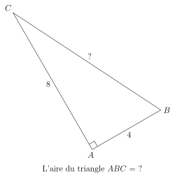
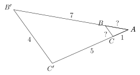

Résumé du cours sur les évolutions
1. Convertir des pourcentages en nombre décimal.
\[ \boxed{x \% = \frac{x}{100}} \]
\[ 70\% = \frac{70}{100} = \frac{7}{10}=0,7 \]
2. Calculer le pourcentage d'une quantité
Pour obtenir \(q'\) qui correspond à \(x\%\) d'une quantité \(q\) on multiplie: \[ \boxed{q' = x\% \times q} \]
Pour calculer \(70\%\) de \(300\) euros, on calcule : \[ 70\% \times 300 = 0,7 \times 300 = 210 \]
3. Convertion d'un taux d'une évolution en coefficient multiplicateur
Soit \(q\) une quantité de départ. La quantité d'arrivée \(q'\) obtenue par une évolution de taux \(t\) est : \[ \boxed{q' = (1 + t) \times q} \]
On définit \(\boxed{c = 1 + t}\) le coefficient multiplicateur.
Pour une hausse de \(70\%\) on obtient un coefficient multiplicateur de \(1,7\).
Pour augmenter \(300\) € de \(70\%\), on calcule : \[ (1 + 70\%)\times 300 = 1,7 \times 300 = 510 \]
Pour une baisse de \(70\%\) de \(300\) €, on calcule : \[ (1 - 70\%) \times 300 = 0,3 \times 300 = 90 \]
4. Succesion d'évolutions
Pour enchaîner plusieurs évolutions, il suffit de multiplier par plusieurs coefficients.
Une hausse de \(10\%\) suivie d'une hausse de \(30\%\) revient à multiplier la quantité de départ par \(1,10 \times 1,3 = 1,43\). Ce coefficient multiplicateur de \(1,43\) traduit une hausse globale de \(43\%\).
Les taux des évolutions successives ne s'additionnent pas.
D'après l'exemple précédent, on a bien \(10\% + 30\% = 40\%\). Pourtant, l'évolution globale constatée est de \(43\% \not = 40\%\).
5. Évolution inverse
Si \(q'\) a été obtenu suite à une évolution de taux \(t\), alors la quantité de départ se retrouve grâce au calcul suivant : \[ \boxed{q = \frac{q'}{1+t}} \]
Si un article vaut \(44\) euros après une augmentation de \(10\%\), il valait auparavant \(40\) €, puisque : \[ q = \frac{44}{1 + 0,1} = \frac{44}{1,1}=40 \]
6. Évolution réciproque
Deux évolutions sont dites réciproques si la succession des deux est une évolution de taux \(0\%\) (c'est-à-dire un coefficient multiplicateur égal à \(1\)).
Soit \(q\) qui subit une évolution de taux \(t\), et \(q' = (1+t)q\) la quantité d'arrivée. Alors, l'évolution réciproque admet un taux \(t'\) avec \(t'\) le nombre tel que : \[ \frac{1}{1+t} = 1 + t' \] Autrement dit, le taux \(t'\) de l'évolution réciproque à celle de taux \(t\) se calcule par : \[ t' = \frac{1}{1+t} - 1 = \frac{1}{1+t} - \frac{1+t}{1+t} \] \[ \boxed{t' = - \frac{t}{1+t}} \] On remarque que \(t'\) et \(t\) sont de signes opposés.
Si un article passe de \(40\) euros à \(44\) euros, en subissant une hausse de \(10\%\), pour retrouver sa valeur de départ, il faut lui faire subir une baisse de \(-\frac{0,1}{1,1} = - \frac{1}{11} \approx - 9,1 \%\).
7. Retrouver un taux d'évolution
7.1. Pour une seule évolution
Soit \(q\) une quantité de départ, et \(q'\) une quantité d'arrivée obtenue après une évolution de taux \(t\). Alors, on peut calculer \(t\) grâce à : \[ \boxed{\frac{q' - q}{q} = t } \]
Quelle est le taux de l'évolution d'un article qui passe de \(30\) à \(65\) euro ? D'après la formule précédente on obtient : \[ \frac{60 - 35}{35} = \frac{25}{35} = \frac{5}{7} \approx 71,4\% \]
7.2. Pour deux évolutions de même taux
Soit \(q\) une quantité de départ, et \(q'\) une quantité d'arrivée obtenue après \(2\) évolutions, toutes les deux de taux \(t\). Alors : \[ \boxed{t = \sqrt{\frac{q'}{q}} - 1} \]
Quel est le taux des deux évolutions qui font passer un article de \(30\) euros à \(65\) euros (avec un prix intermédiaire inconnu) ?
D'après la formule précédente, on obtient : \[ \sqrt{\frac{65}{30}} - 1 = \sqrt{\frac{13}{6}} - 1 \approx 47,2 \% \]
8. Feuille d'exercices
Ces exercices de divers chapitres ont pour but de faire travailler votre agilité mentale (votre capacité à passer d'un sujet à un autre).
Ils ont été conçu pour être fait dans l'ordre.
Calculatrice autorisée.
8.1. Échauffement - 5 minutes
Petits tours de terrain. Pas besoin de rédaction. Par quoi faut-il remplacer « ? » dans chaque calcul ci-dessous ?
- \(2 \times ? = 26\)
- \(12 \, ? \, 10 = 1,2\)
- \(3\times 10^{?} = 30000\)
- \(3\times 10^{?} = 0,0003\)
- \(\frac{24}{100} = ?\)
8.2. Premier tour de circuit – 5 minutes
Trouver la valeur de « ? » dans chaque cas.


8.3. Retrouver de la puissance – 10 minutes
Compléter sans calculatrice, et retrouver vos résultats pour vous corriger.
- \(2^3 = \ldots\)
- \(2^{0} = \ldots\)
- \(2^{-1} = \ldots\)
- \(2^{-2} = \ldots\)
- \(2^{-2} \times 2^{2} = \ldots\)
- \(2^{-1} \times 2^{-1} =\ldots\)
- \(2^{-1} + 2^{-1} = \ldots\)
- \(10^{-1} + 10^{-1} = \ldots\)
- \(3 \times 10^{-3} + 2\times \frac{1}{10} = \ldots\)
- \(2 \times 10^1 + 4 + \ldots\times 10^{-3} = 24,005\)
8.4. Équations à deux mains – 10 minutes
- Trouve une équation de la forme \[ ? \times x + \, ? = ? \times x - \, ? \] Avec \(?\) les nombres que tu veux (entiers ou non)
- Résout cette équation.
- Propose cette équation à ton voisin lorsqu'il a fini, et comparer vos réponses.
8.5. Les ensembles – 5 minutes.
Compléter par les symboles \(\in, \subset\) ou \(\not \in, \not \subset\). Utilisez votre calculatrice après avoir proposé une réponse.
- \(10^{-1} \ldots \mathbb{Z}\)
- \(\frac{2}{3} \ldots \mathbb{D}\)
- \(\mathbb{Z} \ldots \mathbb{D}\)
- \(\frac{8 - 2^{3}}{11} \ldots \mathbb{Z}\)
- \((9-2)^2 \ldots \mathbb{N}\)
8.6. Évoluer – 5 minutes.
Regrouper toutes les phrases ou calcul qui donnent le même résultat, sans calculatrice, et sans calcul mental.
- \(300\times 0,8\)
- \(300\) euros augmenté de \(80\%\)
- \(300\times(1 + 0.8)\)
- \(300\) euros réduit de \(20\%\)
- \(0,2 \times 300\)
- \(\frac{300}{5}\)
- Calculer \(20\%\) de \(300\) euros.
8.7. À la racine du problème – 10 minutes.
Nous allons régulièrement utiliser le théorème de \textsc{PYTHAGORE} cette année, et donc souvent des racines carrées.
- L'aire de mon carré de jardin fait \(10\) mètres carrés. Combien fait-il de coté ?
- Un carreau de cahier mesure \num{0,8}\unit{cm}\(\times\) \num{0,8}\unit{cm}. Combien mesure sa diagonale en centimètre arrondi au millimètre ?
- Avec votre calculatrice comparer les nombres suivants (c'est à dire
placer le symbole \(>\), \(<\) ou \(=\), en fonction de qui est le plus grand).
- \(4 \ldots \sqrt{4}\)
- \(3 \ldots \sqrt{3}\)
- \(2 \ldots \sqrt{2}\)
- \(1 \ldots \sqrt{1}\)
- \(0,5 \ldots \sqrt{0,5}\)
- \(0,1 \ldots \sqrt{0,1}\)
- \(0,01 \ldots \sqrt{0,01}\)
- \(0 \ldots \sqrt{0}\)
- \(-1 \ldots \sqrt{-1}\)
- Mise à part le dernier calcul de la question précédente, que pouvez-vous remarquez entre le nombre \(x\) et le nombre \(\sqrt{x}\) quand \(x\) est une inconne qui désigne un nombre entre \(0\) et \(4\) ?